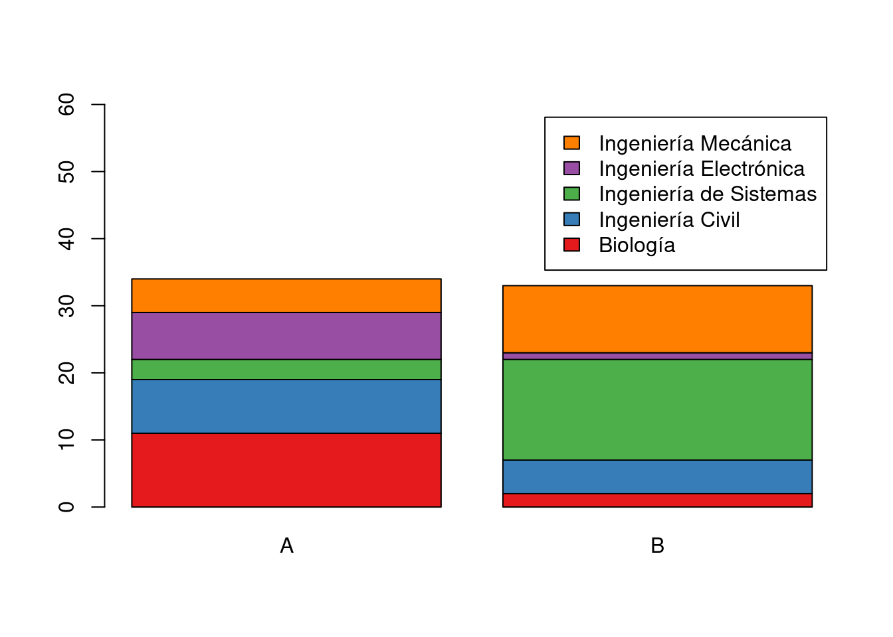
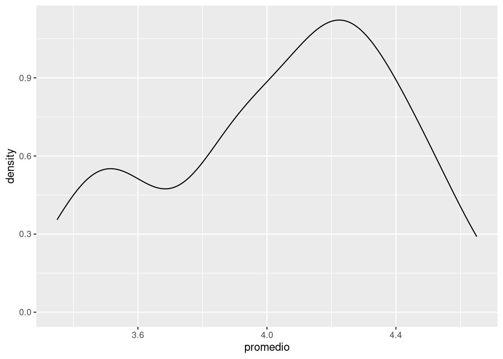
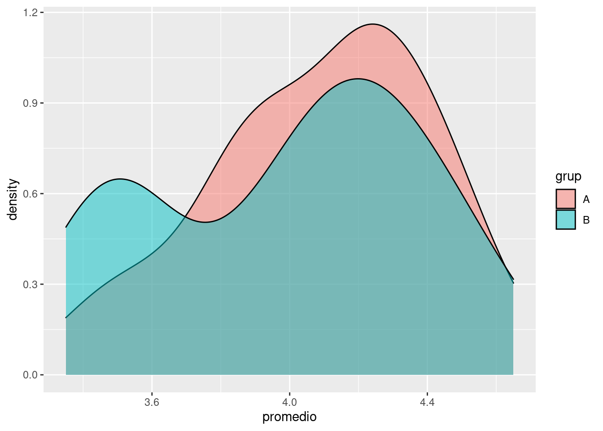

Bases de datos
Módulo 1- Unidad 1.1
dgonzalez
Guía de aprendizaje 1.1

1. Introducción
En esta unidad se presenta la Metodología Estadística como estrategia que permite visualizar las diferentes etapas presentes en una investigación o análisis de datos :
- Definición del problema
- Definición de los objetivos
- Definición de las variables de interés
- Diseño del experimento
- Recolección de la información
- Procesamiento de información
- Análisis descriptivo
- Inferencia estadística
- Recomendaciones y conclusiones
Haciendo especial referencia a la construcción, depuración y documentación de las bases de datos, acciones necesarias para un buen análisis de datos.
Con este ropósito se hará uso del portal Bases de Datos Abiertos Colombia, de la hoja electrónica Excel y del lenguaje R.
2. Objetivos de la unidad
Al finalizar la unidad los estudiantes estarán en capacidad de RECONOCER los pasos de la Metodología Estadística y podrán ESTRUCTURAR, LIMPIAR y DOCUMENTAR una base de datos con el fin de garantizar los elementos necesarios para realizar un procesamiento de datos. Para ello seleccionaran una base de datos del portal de Datos Abiertos Colombia. Adicionalmente propondrán un problema que les permita el desarrollo de la metodológica estadística.
3. Duración
La presente unidad será desarrollada durante la primera semana del semestre ( 24 al 30 enero de 2022). Ademas del material suministrado se podrá contar con el acompañamiento del profesor en tres sesiones (Lunes, Miércoles y Viernes) y de un monitor. Los documentos requeridos para esta unidad deberán ser entregados a través de la plataforma Brightspace hasta el 30 de enero.
Para alcanzar los objetivos planteados se propone realizar las siguientes actividades:
Cronograma de trabajo
| Actividad101 | Descripción |
|---|---|
| Individual | Metodología estadística: : Formular un problema que le permita desarrollar un ejercicio académico durante el semestre a través de la recolección de información (primaria o secundaria), Ademas de establecer los objetivos y las variables de interés asociadas en dicho problema e identificar el tipo de variable y su escala de medición. El resultado de esta actividad deberá se entregado en archivo pdf con nombre: actividad101.pdf en enlace ubicado en la plataforma Bs |
| Recursos | Metodología |
| Fecha | 30 de enero de 2022 |
| Hora | 23:59 |
| Actividad102 | Descripción |
|---|---|
| Individual | Base de datos : Cada estudiante deberá buscar una base de datos de su interés, depuarla y documentarla si es necesario. A partir de la información recolectada deberá construir la ficha técnica de la base. El resultado de esta actividad deberá se entregado en archivo pdf con nombre: actividad102.pdf |
| Recurso | Video: Como descargar datos abiertos |
| Formato ficha : Ficha técnica | |
| Excel | |
| RStudio | |
| Fecha | 30 de enero 2022 |
| Hora | 23:59 hora local |
| Actividad103 | Descripción |
|---|---|
| Individual | Instalación de R y RStudio : Para el desarrollo de las actividades del curso deberán instalar R CRAN y RStudio. Para su correcta instalación existen varios videos en YouTube que le permitirán realizarlo de una manera correcta |
| Recursos | DESCARGAR e instalar R y RStudio 2021 -Video Rafa Gonzalez Gouveia |
| R download | |
| RStudio download | |
| Fecha | 30 de enero 2022 |
| Hora | 23:59 hora local |
Criterios de evaluación
Reconocer la relación existente ente la definición del problema, el planteamiento de los objetivos y la definición de las variables de interés dentro de la Metodología Estadística.
Reconocer e identificar los diferentes tipos de variables y sus respectivas escalas de medición.
Identificar la estructura de una base de datos
Los entregables completos y enviados dentro de los tiempos establecidos otorgarán 25 puntos por la actividad101 y 25 puntos por la actividad102, para un total de 50 puntos.
Entregables
| Entregable | Descripción |
|---|---|
| actividad1.pdf | Documento que contenga: Formulación de problema propuesto, definición de los objetivos y definición de variables de interés. En este último caso detallar para cada variable su tipo ( cualitativa o cuantitativa ) y su escala de medición ( nominal, ordinal, de intervalo o de razón). |
| actividad2.pdf | Ficha técnica de la base seleccionada |
| Fecha | 30 de enero de 2022 |
| Hora límite | 23:59 hora local |
Presentaciones
Recursos
Con el fin de tener una idea inicial del propósito de este módulo, se presenta información relacionada con los estudiantes que toman el curso utilizando para ello gráficos e indicadores estadísticos, los cuales podremos interpretar al finalizar el módulo.
Grupos 2022- 1
t1011=table(bpe20221$carrera,bpe20221$grup)
barplot(t1011,col = brewer.pal(6,"Set1"), ylim = c(0,60),
legend = rownames(t1011))
p=ggplot(bpe20221, aes(x=promedio))+
geom_density()
p 
p1012<-ggplot(bpe20221, aes(x=grup, y=promedio)) +
geom_boxplot(fill = "palegreen", color = "blue4",
size=0.5, outlier.color = "blue4", outlier.size = 2)+
geom_jitter(color="black", size=0.4, alpha=0.9)
p1012 ggplot(bpe20221, aes(x = promedio, fill = grup)) +
geom_density(alpha = .5)
Metodología estadística
Una forma de abordar el curso de Probabilidad y Estadística e mediante la metodolgía estadística, que al igual que el método cientifico está conformada por una serie de etapas que van desde la definición del problema hasta la escritura del informe final con las conclusiones y recomendaciones.
1. Definición del problema
2. Definición de los objetivos
3. Definición de las variables de interés
4. Diseño del experimento
5. Recolección de la información
6. Procesamiento de los datos
7. Análisis descriptivo
8. Inferencia estadística
9. Conclusiones y recomendacionesLa descripción de cada una de ellas se presenta a continuación:
Para abordar las primeras etapas se plantea la actividad 101, donde se plantea la necesidad de definir un prolema, definir unos objetivos y determinar las variables que serán empleadas para poder cumplir con los objetivos planteados.
Continuaremos con una parte importante de esta metodología que está relacionada con la obtención de la información y la construcción de la base de datos.
Base de datos
Una base de datos es un conjunto de datos pertenecientes a un mismo contexto y almacenados sistemáticamente para su posterior uso. Wikipedia
Una base de datos en estadística es un conjunto de información relacionada con una población organizada en filas y columnas. Las columnas corresponden a las variables y las filas están relacionadas con los individuos u objetos de estudio.
Es importante indicar que variables como: número de la encuesta, número de identificación, teléfono, dirección, entre otros, no constituyen variables estadística, aun que pueden ser utilizadas para la identificación de la persona u objeto de donde proviene la información.
Existen repositorio de bases de datos para uso general como:
Base datos iris (dataset R)
data(iris)
head(iris) Sepal.Length Sepal.Width Petal.Length Petal.Width Species
1 5.1 3.5 1.4 0.2 setosa
2 4.9 3.0 1.4 0.2 setosa
3 4.7 3.2 1.3 0.2 setosa
4 4.6 3.1 1.5 0.2 setosa
5 5.0 3.6 1.4 0.2 setosa
6 5.4 3.9 1.7 0.4 setosaDatos de iris (de Fisher o Anderson) + longitud y ancho del sépalo + largo y ancho de pétalos + especies: setosa, versicolor y virginica.
Base de datos estadísticos se estructura mediante arreglo de filas y columnas (matriz) donde por lo general las columnas representan las variables y las filas los registros de los objetos de estudio
Una base de datos es un conjunto de datos pertenecientes a un mismo contexto y almacenados sistemáticamente para su posterior uso.
Wikipedia
Una base de datos en estadística es un conjunto de información relacionada con una población organizada en filas y columnas. Las columnas corresponden a las variables y las filas están relacionadas con los individuos u objetos de estudio.
Existen repositorio de bases de datos para uso general
dataset en RStudio (bases de datos dentro de los paquetes de R)
Open Data Barometer : https://opendatabarometer.org/4thedition/report/?lang=es]
data(iris)
library(DT)
DT::datatable(head(iris, 150),fillContainer = FALSE, options = list(pageLength = 8))Etapas del proceso de datos
Las siguientes etapas comprenden el ciclo de los datos desde la importación hasta la comunicación. Estas etapas suceden al interior de la Metodología Estadística antes mencionada y constituyen una parte muy importante del proceso, pues de la calidad de los datos, depende la calidad de los resultados.

Imagen tomada de : https://bitsandbricks.github.io/ciencia_de_datos_gente_sociable/
Utilizaremos para este proceso el lenguaje estadístico R , bajo RStudio
Importar datos
Origen de los datos
Los datos pueden proceder de diferentes fuentes (tanto primarias como secundarias), dentro de las cuales pueden ser:
Encuesta personal (datos primarios)
Online ( utilizando sistemas como REDCap, Office 365 - forms)
Entrevista cara a cara
Entrevista telefónica
Investigación propia ( observaciones en laboratorios)
Sistema automático de recolección de datos ( webscraping)
Fuente externa (datos secundarios : bases de datos abiertos)
DANE (o entidades gubernamentales)
Cámara de Comercio
Agremiaciones (observatorios de gremios)
Bancos de datos abiertos
Herramientas computacionales
Algunas de las herramientas utiliziadas en el manejo de información son :
Excel
SQL
Oracle
SAS
Julia
R, RStudio
Python
En nuestro caso haremos uso del lenguaje estadístico **R*
Limpieza de datos
Es importante después de haber importado la base de datos, hacer una revisión de cada una de las variables con el fin de poder detectar:
Datos faltantes (NA)
Datos anómalos o raros
Etiquetas mal colocadas ( minúsculas, MAYÚSCULAS, Titulo…)
Existen metodologías para corregir estos problemas sin afectar la información contenida en la data, para lo cual debemos realizar una verificación inicial mediante la construcción de tablas y resumen de datos.
Ficha técnica
Las bases de datos debe estar acompañadas de una ficha técnica donde si indican sus principales características :
Importar bases de datos
Los datos se pueden importar de diferentes formas :
Desde el menú de RStudio
Desde la consola de R o RStudio
De manera automática
Importar datos desde la dataset de R
data("mtcars")
head(mtcars, n=3) mpg cyl disp hp drat wt qsec vs am gear carb
Mazda RX4 21.0 6 160 110 3.90 2.620 16.46 0 1 4 4
Mazda RX4 Wag 21.0 6 160 110 3.90 2.875 17.02 0 1 4 4
Datsun 710 22.8 4 108 93 3.85 2.320 18.61 1 1 4 1Importar los datos en formato xlsx
RStudio usando ventanas : File/ Import Dataset / From Excel…
RStudio usando comandos :
Importar datos en formato csv
El formato csv es uno de los mas utilizados para el almacenamiento de datos estructurados (agrupados en filas y columnas) . El termino csv significa “valores separados por comas”
RStudio usando ventanas : File/ Import Dataset / From Text (base)…
RStudio usando comandos :
var1=c(1,2,4,5)
bd=bpe20221[,var1]
head(bd, n=3) id grup carrera promedio
1 1 B Ingeniería de Sistemas 4.07
2 2 B Ingeniería Electrónica 3.39
3 3 B Ingeniería Mecánica 4.50Otro ejemplo para importar una base de datos en formato csv :
Selecciono una base de datos de mi interés (portal FiveThirtyEight: https://data.fivethirtyeight.com/ - base de datos Predicción de clubes de fútbol)
Descargo la base de datos y la guardo en la carpeta de trabajo
Importo la base a RStudio
library(DT)
clasificacion=read.csv("data/spi_global_rankings_intl.csv")
datatable(head(clasificacion, 218),fillContainer = FALSE, options = list(pageLength = 3))Importar datos de manera automática
La API de datos abiertos de Socrata le permite acceder mediante programación a una gran cantidad de recursos de datos abiertos de gobiernos, organizaciones sin fines de lucro y ONG de todo el mundo. Haga clic en el enlace de abajo y pruebe un ejemplo en vivo ahora mismo.
Cargar la base de datos de COVID-19 Colombia
# install.packages("RSocrata")
library(RSocrata)
token ="ew2rEMuESuzWPqMkyPfOSGJgE"
Colombia= read.socrata("https://www.datos.gov.co/resource/gt2j-8ykr.json", app_token = token)
saveRDS(Colombia,"data/Colombia.RDS")Nota: se requiere solicitar token en la pagina de los datos
Actividades a realizar
A1 Metodología estadística : Formular un problema que le permita desarrollar un ejercicio académico durante el semestre a través de la recolección de información (primaria o secundaria), Ademas deberá establecer los objetivos y las variables de interés , para las cuales deberá identificar el tipo de variable y su escala de medición. El resultado de esta actividad deberá se entregado en archivo pdf con nombre: actividad1.pdf
A2 Base de datos : Deberá buscar una base de datos de su interés en el portal
Datos Abiertos Colombia, depuarla y documentarla si es necesario. A partir de la información recolectada deberá construir la ficha técnica de la base. El resultado de esta actividad deberá se entregado en archivo pdf con nombre: actividad2.pdf
A3 Instalación de R y RStudio : Para el desarrollo de las actividades del curso deberá instalar las ultimas versiones de R CRAN y de RStudio